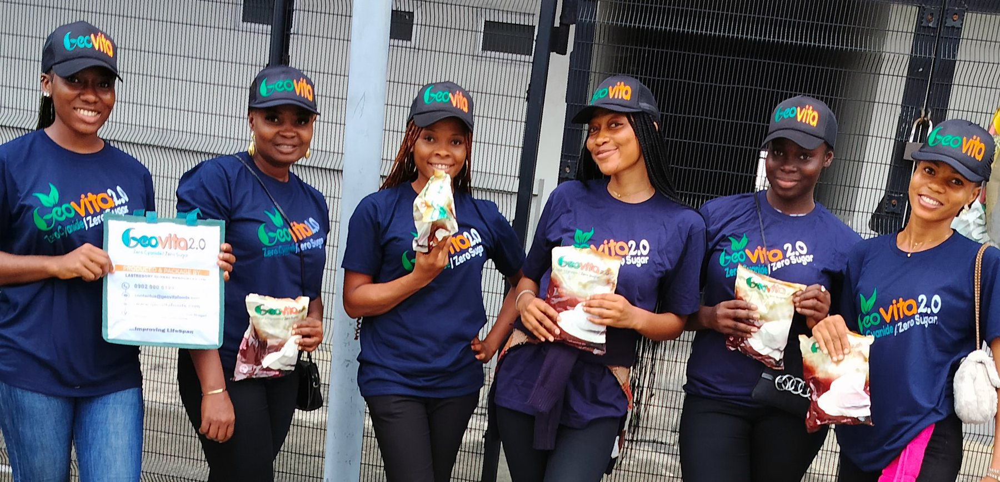

Odigbo LGA, Ondo StateKm 10 Aye Road, Lafe Camp
Our story
Geo for the earth. Vita for life.
Started by parent company LastResort Global Resources to bring safer, cleaner staples to African homes.
- Low glycemic index
- Low cyanide, rigorously processed
- Earth-grown cassava and yam